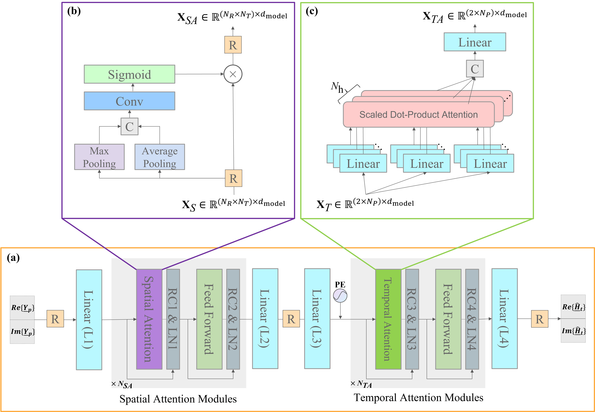
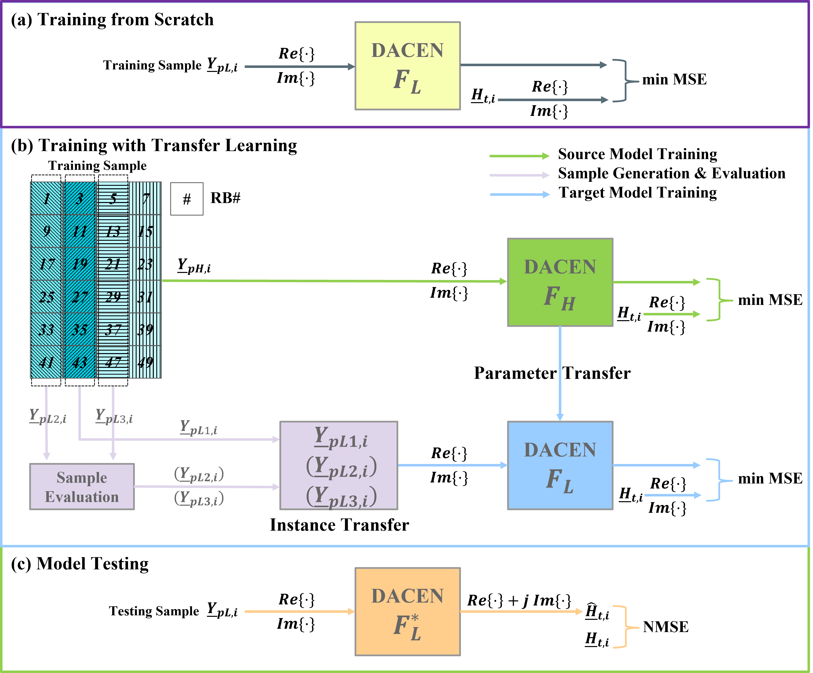
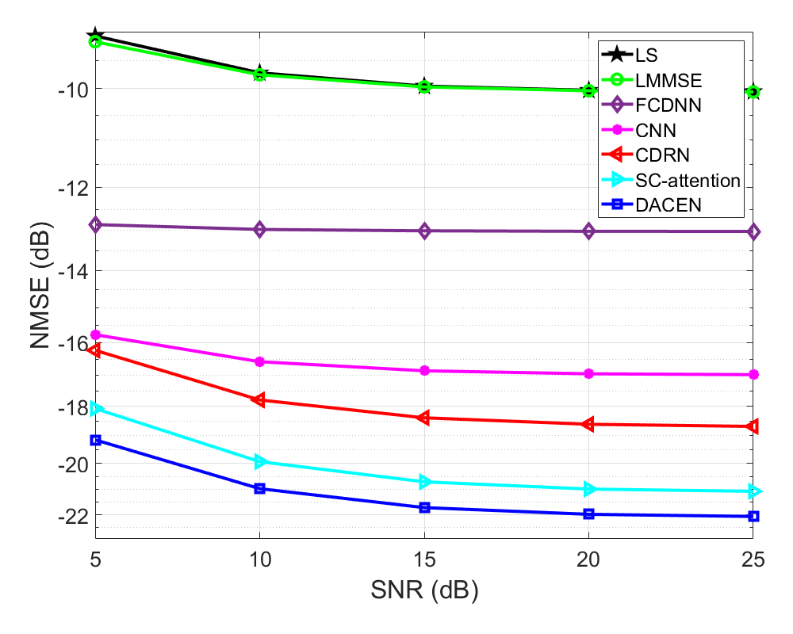
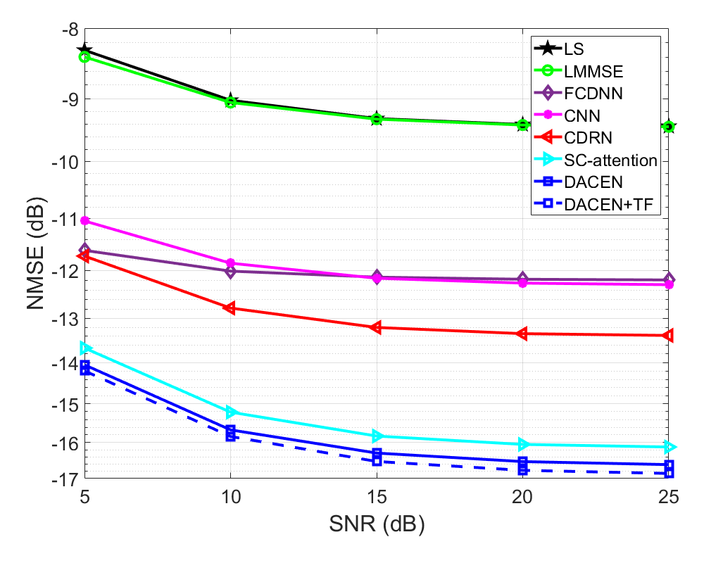
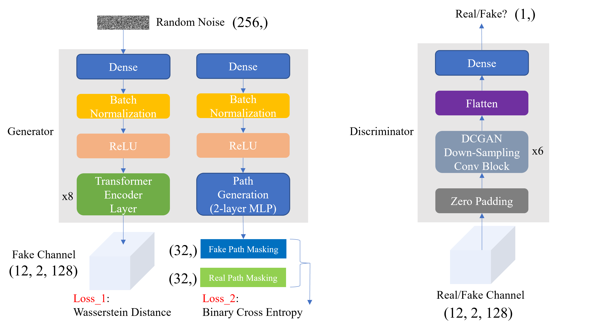
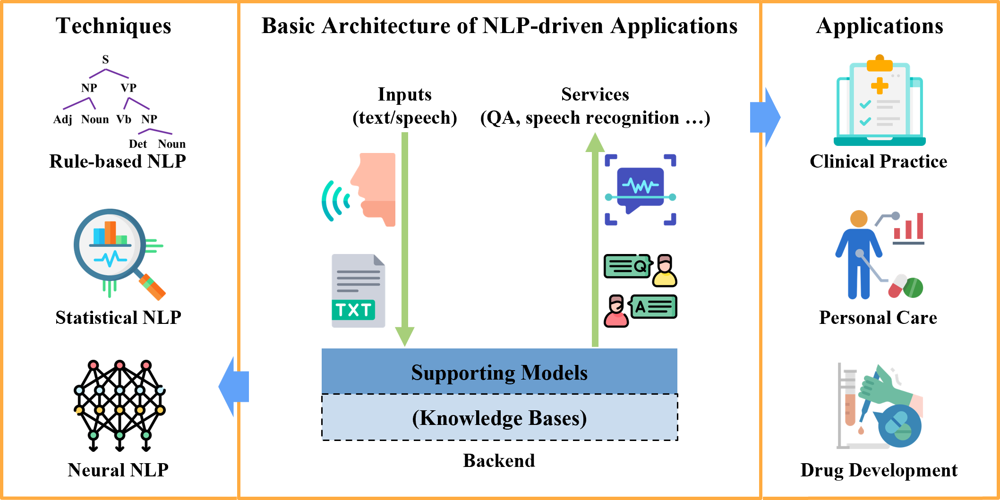

Research Interests
Artificial Intelligence: Spatial-temporal Data Mining, Natural Language Processing, Generative Artificial Intelligence
AI Empowered Wireless Communications: Channel Estimation, CSI Feedback, Channel Modeling, Massive MIMO
Smart Healthcare: Artifical Intelligence and Wireless Communications for Smart Healthcare
Research Highlights
AI Empowered Wireless Communications
[2] Binggui Zhou, Xi Yang, Shaodan Ma, Feifei Gao and Guanghua Yang, “Pay Less But Get More: A Dual-Attention-based Channel Estimation Network for Massive MIMO Systems with Low-Density Pilots,” accepted by IEEE Transactions on Wireless Communications. (JCR Q1, IF: 10.4) [Paper] [Preprint] [Code]
To reap the promising benefits of massive multiple-input multiple-output (MIMO) systems, accurate channel state information (CSI) is required through channel estimation. However, due to the complicated wireless propagation environment and large-scale antenna arrays, precise channel estimation for massive MIMO systems is significantly challenging and costs an enormous training overhead. Considerable time-frequency resources are consumed to acquire sufficient accuracy of CSI, which thus severely degrades systems’ spectral and energy efficiencies. In this paper, we propose a dual-attention-based channel estimation network (DACEN) to realize accurate channel estimation via low-density pilots, by jointly learning the spatial-temporal domain features of massive MIMO channels with the temporal attention module and the spatial attention module. To further improve the estimation accuracy, we propose a parameter-instance transfer learning approach to transfer the channel knowledge learned from the high-density pilots pre-acquired during the training dataset collection period. Experimental results reveal that the proposed DACEN-based method achieves better channel estimation performance than the existing methods under various pilot-density settings and signal-to-noise ratios. Additionally, with the proposed parameter-instance transfer learning approach, the DACEN-based method achieves additional performance gain, thereby further demonstrating the effectiveness and superiority of the proposed method. Read More
The proposed DACEN (left) and the parameter-instance transfer learning approach (right):


Some numerical results (left: ; right: ):


[1] Check out Our Solution to the First 6G AI Competition held by the Guangdong OPPO Mobile Communications Corp., Ltd, which won the Silver Prize and ranked No. 2 over 727 teams.

Smart Healthcare
[1] Binggui Zhou, Guanghua Yang, Zheng Shi, and Shaodan Ma, “Natural Language Processing for Smart Healthcare,” accepted by IEEE Reviews in Biomedical Engineering, Sept. 2022. (JCR Q1, IF: 17.6, Featured Article of IEEE Reviews in Biomedical Engineering 2023) [Paper] [Preprint]
In smart healthcare, natural language processing (NLP) techniques are highly demanded to analyze and understand human language for various smart applications across various healthcare scenarios. In this work, we review existing studies that concern NLP for smart healthcare from the perspectives of technique and application. We first elaborate on different NLP approaches and the NLP pipeline for smart healthcare from the technical point of view. Then, in the context of smart healthcare applications employing NLP techniques, we introduce several representative smart healthcare scenarios. We further discuss two specific medical issues, i.e., the coronavirus disease 2019 (COVID-19) pandemic and mental health, in which NLP-driven smart healthcare plays an important role. Finally, we discuss the limitations of current works and identify the directions for future works. Read More
